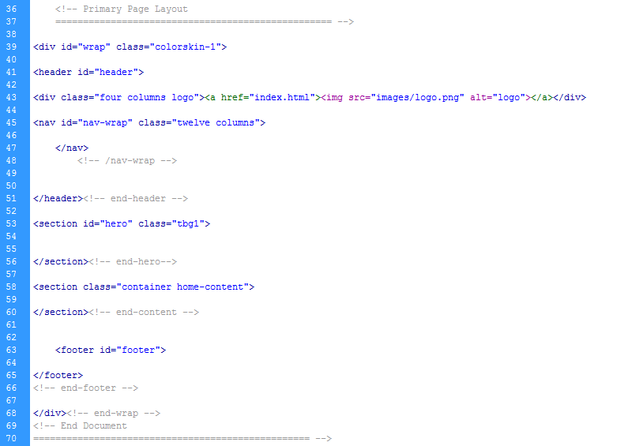
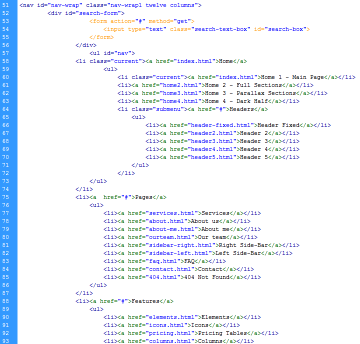
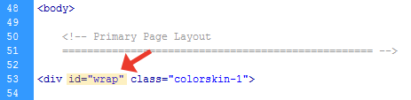
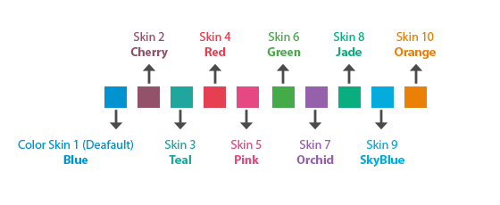
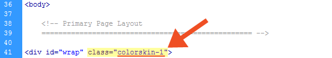
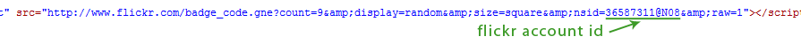
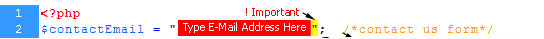

“Mexin HTML5 Template ” Documentation by “WEBNUS” v1.4.0
Created: September 7, 2013
Email: webnus.net@gmail.com
Thank you for purchasing our template. If you have any questions that are beyond the scope of this help file, please feel free to email via my user page contact form here. Thanks so much!
Table of Contents
- HTML Structure
- CSS Files and Structure
- Boxed or Wide Layout
- Predefined Color Skins
- Latest tweet
- Flickr Photo Stream
- Use Like Systm
- JavaScript
- Contact Form
- Sources and Credits
A) HTML Structure - top
Mexin template is based on Skeleton - a small collection of CSS & JS by Dave Gamache files that can help you rapidly develop sites that look beautiful at any size, be it a 17" laptop screen or an iPhone.
Skeleton's base grid is a variation of the 960 grid system. The syntax is simple and it's effective cross browser, but the awesome part is that it also has the flexibility to go mobile like a champ. You can really easily customize all part of site or build new.
1. Firstly add 960 container
<div class="container"></div>
<!-- end -->
2. Secondly add a few columns from one to sixteen (that's max columns)
<div class="container">
<div class="eight columns">1/2 Column - Content Here</div>
<div class="eight columns">1/2 Column - Content Here</div>
</div>
<!-- end -->
This Template is a Liquid Responsive layout with 1 main column that called "Warp".
under this section we have 5 primery section that called :
2) header
3) navbar
4) hero (Slider)
5) container (Content)
6) footer
we have try to write simple code for better usability when you want edit this.
our tags is very clear for example: if you want change "logo" just change address in this tag (follow picture) under header section

Navigation bar:
If you would like to edit or add elements to Navigation bar , you would do the must following picture:

B) CSS Files and Structure - top
we are using 10 CSS files in this template: "style.css" - "color-skins.css" - "base.css" - "skeleton.css" - "slide1.css" - "icomoon.css" - "blox.css" - "layerslider.css" - "prettyPhoto.css" - "flexslider.css" - contains all general styling, such as colors, font-sizes, etc. but also all of the specific stylings for the page and slider in home page
The "style.css" file is separated into sections using:
 .
.
If you would like to edit a specific section of the site, simply find the appropriate label in the CSS file, and then scroll down until you find the appropriate style that needs to be edited.
I.E. you want to change the header height:
/* HEADER */
#header { height:auto; padding-top:8px; }
C) Boxed or Wide Layout - top
please find first division in body:
for wide layout use
id="wrap"for boxed layout use
id="boxed-wrap"

D) Predefined Color Skins - top


E) Set Twitter feed (latest tweet) - top
First of all navigate to http://dev.twitter.com/app and click on "create new application" button
In the next page click on “Create my access token” button
Fill items (Application Details) In new page (call back url can be left blank) and check "yes agree" and finally enter captcha value and click “Create your twitter application” button
In the next step select “OAuth tool” tab and copy values of
"Consumer key”, “Consumer secret”, “Access token” and “Access token secret” in “config.php” in “twitter/" folder.
F) Flickr Photo Stream - top
please find flickr badge script in html files then change flickr id:
Change current attrubition of user to your's ID (user=00000000@N00).

G)Use Like Systm - top
There is a hidden textbox in line 153 of "portfolio-item.html". You must assign a unique value for each item.
Please find php and database files in "php" folder.
To implement "Like" system, your system must support php 5.3 and sqllite database
H) JavaScript - top
This template imports 18 Javascript files.
- jquery.min.js
- modernizr.custom.11889.js
- nav-resp.js
- bootstrap-alert.js
- bootstrap-dropdown.js
- bootstrap-tooltip.js
- bootstrap-tab.js
- jcarousel.js
- mexin-custom.js
- isotope-custom.js
- isotope.js
- jquery.prettyPhoto.js
- jquery.flexslider-min.js
- jquery.masonry.min.js
- doubletaptogo.js
- layerslider-init.js
- jquery.sticky.js
- jquery.easy-pie-chart.js
I) Contact Form - top
we are design unique and simple php contact form you can edit 1 file "CONFIG.PHP"
The PHP contact form allows your website visitors to send you a Email via a contact form.
To make this contact form work you need to just edit the "config.php" file.
Change following lines below on this picture to make it work:

J) Sources and Credits - top
I've used the following images, icons or other files as listed.
- Font: Google Web Fonts at: http://www.google.com/webfonts
- Images: all images use it to (Slider and etc) under license ENVATO - photodune.net and Purchaseing by Owner (WEBNUS)
all licence have in "licence folder" - Script: LayerSlider - The Parallax Effect Slider (Regular Licence Included in Template) http://codecanyon.net/item/layerslider-the-parallax-effect-slider/922100
- Script: Other Scripts is Free download
- Icon Set: 1200+ Vector Icons Generated by IcoMoon.io
Once again, thank you so much for purchasing this template. As I said at the beginning, I'd be glad to help you if you have any questions relating to this template. No guarantees, but I'll do my best to assist. If you have a more general question relating to the templates on ThemeForest, you might consider visiting the forums and asking your question in the "Item Discussion" section.
www.webnus.net